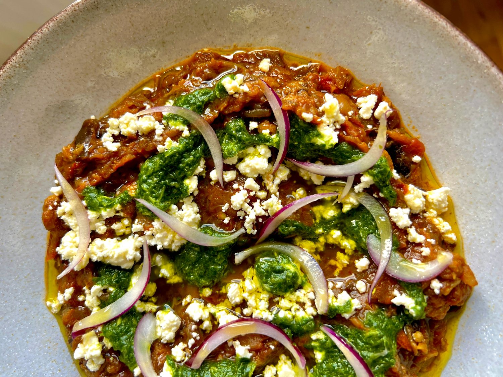

Zaalouk Dip

Zaalouk Dip is a Famous Moroccan Dish
Morocco’s favourite way to make the most out of aubergines is without a doubt zaalouk! In the recipe, we are making a delicious dip based on my classic Zaalouk recipe. Easy and comforting, it’s definitely a crowd pleaser.
Ingredients
- 2 large aubergines (600g).
- 4 medium tomatoes (320g), seeded and chopped.
- 3 tablespoons olive oil.
- 3 garlic cloves, minced or pressed .
- 2 teaspoons paprika.
- 2 teaspoons ground cumin.
- 1 teaspoon salt.
- ¼ teaspoon caster sugar.
- 45ml olive oil.
- 25g coriander.
- 1 ½ teaspoon white wine vinegar.
- Salt to taste.
- Pinch caster sugar.
- 70g crumbled feta.
- ¼ medium red onion, sliced into half moons.
- Olive oil, to drizzle.
Steps
- Remove 3 vertical strips of skin from each aubergine. Discard the vertical strips and cut the aubergines in large cubes.
- Heat the olive oil in a large pan and add the aubergines, tomatoes, garlic, paprika, cumin, salt and sugar. Cover over medium-low heat until the vegetables are soft, about 25 to 35 minutes. Stir occasionally to make sure the vegetables don’t stick to the pan.
- Uncover, mash the vegetables and leave over medium heat until all liquids evaporate. Keep the zaalouk in the fridge for up to 4 days and serve at room temperature.
- To make the coriander oil, combine coriander, olive oil, vinegar, salt and sugar in a food processor and process until very finely minced. Taste and adjust the seasoning with salt and sugar if necessary.
- To serve, spread the zaalouk in a shallow plate, garnish with the feta, coriander oil, sliced onions and a generous drizzle of olive oil.
Enjoy!